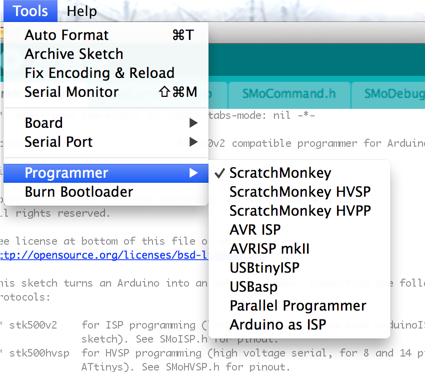

| Overview ← | ↑ ScratchMonkey | → In-System Programming |
ScratchMonkey is hosted on GitHub. To download a release, get it at https://github.com/microtherion/ScratchMonkey/tags.
To get the latest version (which may or may not be in a tested, or even usable, state), clone or fork the master repository at https://github.com/microtherion/ScratchMonkey.
Once you have an unpacked copy of ScratchMonkey on your disk, move the directory to your Arduino Sketchbook directory. On a Mac, this is ~/Documents/Arduino by default. Finally, to make ScratchMonkey available in the Arduino IDE (Instructions given for Mac, but other platforms should work similarly):
Create a hardware directory in your Sketchbook directory, if it doesn't exist already:
mkdir ~/Documents/Arduino/hardware
Copy or link the contents of the ScratchMonkey hardware directory to the Sketchbook hardware directory:
ln -sh \ ~/Documents/Arduino/ScratchMonkey/hardware/scratchmonkey \ ~/Documents/Arduino/hardware/scratchmonkey
If your installation was successful, the Tools → Programmer menu in your Arduino IDE should look like the picture on the right after your next restart. If that looks too crowded for your taste, feel free to edit hardware/scratchmonkey/programmers.txt to trim down the selection of protocols offered (See the next section for the (STK500 Mode) distinction).
For most uses, these features are no great loss, and you can simply use the (STK500 Mode) programmer entries to use the standard protocol. However, if you're interested in these features, and comfortable with avrdude development, you can apply the file avrdude.patch to your copy of the avrdude source code, recompile avrdude, and reinstall it, along with the updated configuration file.
While I will attempt to get the patch incorporated into the standard distribution of avrdude, the Arduino IDE tends to rarely pick up new version of avrdude, so it might take years for this to show up in an Arduino IDE by default.
Now it's time to connect your Arduino to your target MCU. The details for this vary between the different programming methods, and will be discussed in the individual sections.
Before communicating with your target MCU, you first have to upload the ScratchMonkey software to your Arduino:
Now that your Arduino is programmed, it's often helpful to temporarily disable its RESET pin (This is not necessary on an Arduino Micro or Leonardo). On an Arduino Uno, this can be done by connecting a 10µF capacitor between the RESET and GND pins (With the "-" side of the capacitor to GND). Doing this prevents the board from resetting when avrdude connects to it, which will at least speed up the target programming process.
Now it's time to communicate with your target. In a first step, you may need to upload a bootloader to your target and/or reprogram its fuses (Despite the name, Tools → Burn Bootloader will NOT necessarily burn a bootloader. With typical ATtiny cores, only the fuse settings are programmed with this item.)
To upload your actual program:
| Overview ← | ↑ ScratchMonkey | → In-System Programming |